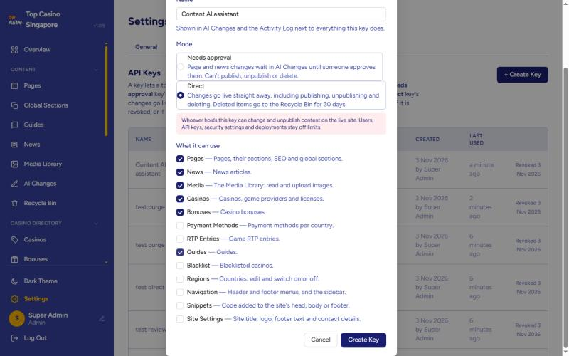
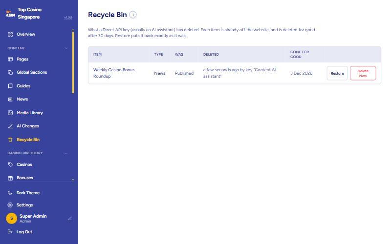

That's all the "tech" you need. Everything else in this guide uses these four words.
A secret password for your AI. It looks like tcs_A1b2C3…. Whoever has it can change your website, so keep it secret, like a bank PIN.
A key that changes the live website straight away. The AI can add, change, publish, hide and delete things.
A key that can only suggest changes to pages and news. A person must click Approve in AI Changes first.
When a Direct key deletes something, it goes here for 30 days. Click Restore to bring it back.
Ask yourself one question: do I want a person to check every change before it goes live?
Every suggestion waits in AI Changes until someone clicks Approve.

Your AI tool needs 3 things. If this part feels hard, hand this page to your developer: it's a one-time job.
| What | What to put |
|---|---|
| ① The address | https://backapi.topcasinosg.com.sg/api/v1 |
| ② The key | Your tcs_… key. Put it in the tool's key / credentials / authentication setting and choose Bearer if asked. Never type it into a chat message. |
| ③ The instructions | Copy the dark box below into the tool's instructions (ChatGPT: the custom GPT's Instructions; Claude: the Project instructions). |
You manage the TopCasinoSG website through its Content API:
https://backapi.topcasinosg.com.sg/api/v1 (send the key as "Authorization: Bearer <key>").
1. First call GET /me and GET /schema. They say what this key may do, list every
endpoint, and explain how pages are built.
2. Before changing anything, read it first (GET), then change only what was asked.
3. Pages: GET /pages to find the page, GET /pages/{id} to read it, then send the whole
"sections" list back, edited, to POST /pages/{id}/changes. Keep everything you
didn't change exactly as it was. Check first with "dryRun": true.
4. News: POST /news for a new article, POST /news/{id}/changes to change one.
5. Other areas (Direct keys only): GET /{area} to list, GET /{area}/{id} to read,
POST /{area} to create, PUT /{area}/{id} to update, PUT /{area}/{id}/status
with {"status":"published"} or {"status":"draft"} to show or hide,
DELETE /{area}/{id} to move to the Recycle Bin.
6. New pages and articles start as drafts. Only publish when the user asks.
7. Before deleting, publishing or changing many things at once, say exactly what you
will do and wait for the user to say yes.
8. After every change, tell the user what you did, with ids, in plain words.
To undo a delete: GET /recycle-bin, then POST /recycle-bin/{id}/restore.
9. Global Sections, menus and colours change every page: always confirm first.
Writing rules: match the site's tone and spelling; never invent bonus amounts,
licences or other facts; no scripts or styles in HTML.
Copy a sentence, change the underlined part, send it. Red labels mean you need a Direct key.
What can you do with this key?
List all the pages on the website with their status.
On the About Us page, change the first paragraph to: …
Update the year to 2027 in every heading on the Casino Bonus page.
Create a new draft page called Live Casino Malaysia with an introduction, 3 FAQs and links to our Malaysia casinos.
Add a new question to the FAQ on the Responsible Gambling page: …
Publish the page About Us.Direct key
Hide (unpublish) the page Sitemap.Direct key
Change the SEO title of the Blackjack page to …Direct key
Publish all draft pages under Casino Games. Show me the list first.Direct key
Write a news article about … and save it as a draft.
Fix the spelling in the latest news article.
Publish the news article … now.Direct key
Schedule the article … to go live on 1 December at 9am.Direct key
All of these need a Direct key with the right area ticked.
Change the welcome bonus text of casino … to 100% up to S$500.
Add a new free spins bonus for casino … in Singapore. Keep it as a draft.
Hide casino … from the website for now.
Add … to the blacklist with the reason: unpaid withdrawals.
Add GrabPay as a payment method for Malaysia.
Update the RTP of … to 96.5%.
Change the contact email in Site Settings to …
Switch off the region Vietnam.
Delete the news article ….
What is in the Recycle Bin?
Restore … from the Recycle Bin.
What did you change today? List everything.
These three change every page at once, so they're usually for one person: the one in charge of the website.
| What | What it is | The key needs |
|---|---|---|
| 🧩 Global Sections | Shared blocks (a banner, a “Play responsibly” box) that many pages show. | The pages area. Direct: changed live. Needs approval: suggested in AI Changes. |
| 🧭 Menus | The header menu at the top and the footer menu at the bottom. | Direct, with the navigation area. |
| 🎨 Colours | The website's colours (brand blue, gold…), also in Settings → Theme. | Direct, with the settings area. |
The key's maker must still be an Admin or Super Admin. If they become an Editor, the key can't make these changes.
Which pages use the Responsible gambling global section?
Change the text in the Responsible gambling global section to …. Tell me which pages it changes first.
In the footer menu, rename Get Listed Now to List Your Casino.
Add Payment Guides to the header menu under Casino Reviews, linking to /guides.
What colours does the website use right now?
Make the brand blue a bit darker. Show me the old and new colours first.
Find your problem in the list, do what it says.
| What happened | What to do |
|---|---|
| The AI deleted something | Click Recycle Bin in the menu (under Content) → find it → click Restore. It comes back exactly as it was, published or not. You have 30 days. |
| The AI changed a page badly | Click Pages → open the page → Revisions tab → pick the version from before → Restore. Each page keeps its last 10 versions. |
| The AI changed a casino, bonus, news or menu badly | Click Activity Log in the menu (under Administration). Every change by a key says “(API key: name)” and shows the old and new values. Copy the old value back, or ask the AI: “Change it back to …” |
| The AI changed a Global Section badly | Pages → Global Sections → Edit → Revisions → pick the version from before → Restore. Every page that shows it goes back too. |
| The AI removed a menu item | Open the Activity Log entry to see what it was, then add it back in Navigation, or ask the AI: “Add … back to the menu as it was.” |
| The AI changed the colours badly | Settings → Theme → Reset next to one colour, or Reset all to original. The Activity Log shows the old colours. |
| The AI published something too early | Ask: “Hide … again.” Or open it in the dashboard and set it to Draft. |
| The key was shared by mistake | Right now: Settings → API Keys → Revoke. It stops working at once. Then check the Activity Log. |

| The AI says | It means → do this |
|---|---|
| “This API key is not valid, has been revoked…” | The key is wrong or switched off → make a new key (Step 1) and give it to the AI again (Step 2). |
| “This API key can't use casinos” | That area isn't ticked on the key → make a new key with that area ticked. |
| “This is a Needs approval key” | It can only suggest → approve in AI Changes, or make a Direct key. |
| “Only an Admin's API key can change Global Sections” | The key's maker is an Editor now → an Admin makes a new key. |
| “Menu item … has items under it” | It has a submenu → move or remove those items first, then try again. |
| “API keys can't delete this” | That type can't be deleted by AI → delete it yourself in the dashboard. |
| “Already in the Recycle Bin” | It was deleted before → restore it, or leave it. |
| “Slug already exists” / “already taken” | Another item uses that web address (maybe one in the Recycle Bin) → pick a different one. |
| “Too many requests” | The AI was too fast → wait one minute and try again. |
Does the AI see my password? No. It only has its key. Keys can't touch users or passwords.
Can I change a key from Needs approval to Direct? No: make a new Direct key, then revoke the old one.
Who shows up in the Activity Log? The admin who made the key, followed by “(API key: name)”.
Do things deleted by people in the dashboard go to the Recycle Bin? No. Only deletes made with a key.
While in the Recycle Bin, where is the item? Still in its own list (Pages, News…) as a Draft, so it's off the website. If someone publishes it, it leaves the bin.
Does a Direct key's work show in AI Changes? Yes, page and news changes appear there as already approved, so you can see what it did.
Base URL https://backapi.topcasinosg.com.sg/api/v1. Auth: Authorization: Bearer tcs_… (or X-API-Key). JSON in and out.
Responses: {"success": true, "data": {…}} or {"success": false, "error": {"message": "…"}}. Limit: 120 requests/minute per key (429 with Retry-After).
A key acts as the admin who created it and stops working when revoked or when that admin is disabled.
| Mode | Behaviour |
|---|---|
| review | Scopes: pages, news, media only. Page/news writes become proposals (pending) in AI Changes. Media uploads are direct. All other paths return 403. |
| direct | Any scope. Page/news proposals are applied immediately (recorded as approved). Every other /api/v1/<path> runs the matching admin endpoint /api/admin/<path> with identical request/response JSON and validation, if the path is in an allowed area and the key has its scope. DELETE moves the item to the Recycle Bin instead of deleting. |
| Scope | Paths under /api/v1 |
|---|---|
| pages | pages, pages/{id}/status|seo|sections, pages/reorder, global-sections, section-templates, seo/page/{id} |
| news | news, news/{id}/status, seo/news/{id} |
| media | media (GET, POST upload, PUT metadata) |
| casinos | casinos, game-providers, licenses, seo/casino/{id} |
| bonuses · guides | bonuses, seo/bonus/{id} · guides, seo/guide/{id} |
| payment_methods · rtp · blacklist | payment-methods · rtp · blacklist |
| regions | regions, regions/{id}/active ({"active": bool}) |
| navigation | menu-items?location=header|footer (DELETE: for good, 409 if items are under it), sidebar (GET, PUT whole) |
| snippets | snippets, snippets/{id}/active, pages/{id}/snippets |
| settings | settings/site, settings/footer, settings/site/logo|favicon, settings/theme |
| never | users, api-keys, account, auth, settings/2fa, settings/security, system, exports, imports, content-imports, content-changes (review), activity |
Pattern per area: GET /{area} list · GET /{area}/{id} read · POST /{area} create · PUT /{area}/{id} update (same fields as GET) · PUT /{area}/{id}/status {"status": "draft"|"scheduled"|"published", "publishAt": RFC3339|null} · DELETE /{area}/{id} → Recycle Bin.
| Endpoint | What it does |
|---|---|
GET /me | Key name, mode, scopes, the admin it acts for, and a plain-words list of what it can do. |
GET /schema | Page-building rules, field types, each block type's fields, and the endpoints this key can use. |
GET /pages, GET /pages/{id} | Pages (id, path, status) and one page with its sections. |
POST /pages, POST /pages/{id}/changes | New page / page change: {title, slug, parentId, metaTitle, metaDescription, sections, note, dryRun}. Review: proposal. Direct: applied (new pages as drafts). |
GET /news, GET /news/{id}, POST /news, POST /news/{id}/changes | The same for articles: {title, slug, excerpt, content, coverMediaId, note, dryRun}. |
GET /global-sections, GET /global-sections/{id}, POST /global-sections/{id}/changes | Scope pages. GET returns {globalSection: {id, name, updatedAt, usedOn}, sections}. Changes: {name, sections, note, dryRun}, like a page; the dry run warns which pages it changes. Admin's key only (403 otherwise). Review: proposal. Direct: applied, saved as a revision. No create or delete. |
GET /settings/theme, PUT /settings/theme | Direct, scope settings. GET lists every colour token with its default and current value. PUT {"colors": {"primary-500": "#3e4ba8", …}} replaces the whole theme: a token left out goes back to its default. |
GET /media, POST /media | Media Library; upload as multipart field file. |
GET /changes, GET /changes/{id}, POST /changes/{id}/withdraw | This key's proposals and their review notes. |
GET /recycle-bin, POST /recycle-bin/{id}/restore | Direct keys: what was deleted, and undo. |
depth. Depth 0 (directly on the page) may only be container or global_section.layout: stack, row, grid, tabs, accordion or carousel.{itemIndex, fieldKey, fieldType, textValue, urlValue, mediaId}; itemIndex 0 = the section's own fields, 1+ = repeated items (FAQ questions…).sections list back. Use "dryRun": true first.Binnable: pages, news, casinos, bonuses, payment-methods, rtp, guides, blacklist, snippets. Deleting sets the item to draft (snippets: inactive) and records its previous status; restore puts it back.
After 30 days the API deletes it for good through the normal admin delete, unless someone published it in the meantime (then it just leaves the bin). The item's slug stays taken while it is in the bin.
Other types return 403 on DELETE.
curl -X PUT https://backapi.topcasinosg.com.sg/api/v1/casinos/12/status \
-H "Authorization: Bearer tcs_…" -H "Content-Type: application/json" \
-d '{"status": "draft"}'
curl -X DELETE https://backapi.topcasinosg.com.sg/api/v1/news/40 -H "Authorization: Bearer tcs_…"
→ {"success":true,"data":{"deleted":true,"recycleBinItem":{"id":7,...},"message":"Moved to the Recycle Bin..."}}
curl -X POST https://backapi.topcasinosg.com.sg/api/v1/recycle-bin/7/restore -H "Authorization: Bearer tcs_…"
400 invalid body (the message names the field) · 401 bad or revoked key · 403 wrong mode, missing scope, or not deletable · 404 no such item, or a path keys can't use · 409 conflict (slug taken, already in bin, outdated proposal) · 429 rate limit.